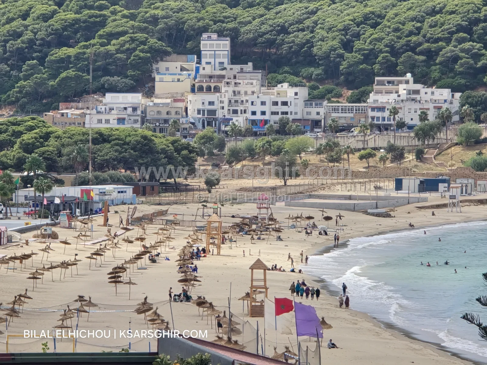
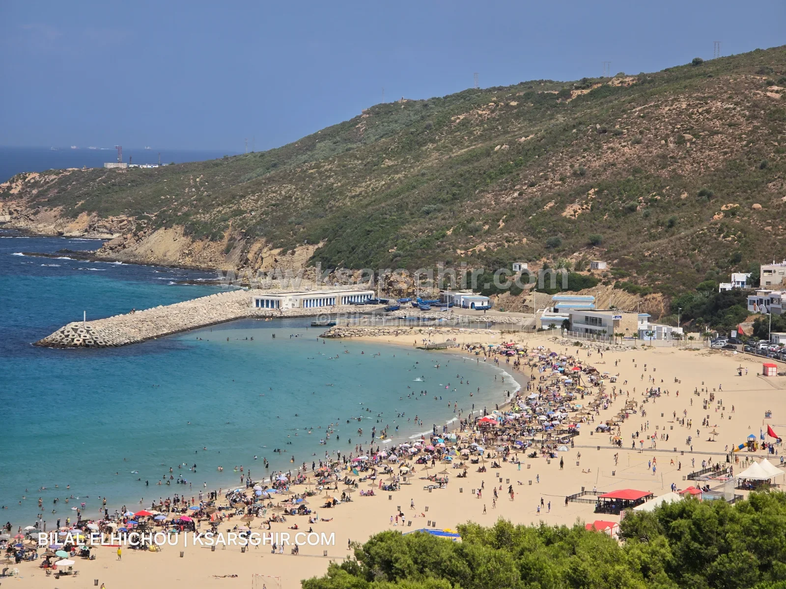

🏖️ شواطئ
شاطئ الدالية: حاصل على اللواء الأزرق 11 مرة، رمل نقي، أنشطة ومكتبة شاطئية، فضاء لذوي الاحتياجات الخاصة، مدرسة للقوارب الشراعية، مع نصائح السلامة وطريقة الوصول.

شاطئ رملي حاصل على اللواء الأزرق 11 مرة، آخرها سنة 2026، على بعد 8 كم شرق القصر الصغير. فيه حراسة من يونيو إلى شتنبر، ومنصة أنشطة ومكتبة شاطئية في الصيف، وفضاء مجهز لذوي الاحتياجات الخاصة، ومدرسة للقوارب الشراعية طوال السنة. السباحة فيه مريحة داخل المنطقة المحروسة.
يقع شاطئ الدالية على الطريق الساحلية بين القصر الصغير والفنيدق، على بعد 8 كم من القصر الصغير و43 كم من طنجة و30 كم من الفنيدق. وهو تابع إدارياً لـجماعة القصر المجاز بإقليم الفحص أنجرة، ويبعد حوالي 800 متر عن مركز الدالية.
الشاطئ قريب من ميناء طنجة المتوسط، فتمر أمامه البواخر الكبيرة طوال اليوم، وهو مشهد يحبه الأطفال والمصورون. ويجمع المكان بين رمل نقي وتلال خضراء تحيط بالخليج.
اللواء الأزرق (Pavillon Bleu) علامة دولية تمنح سنوياً للشواطئ التي تحترم معايير صارمة في جودة مياه السباحة، والسلامة والخدمات، والتدبير البيئي، والتربية والتحسيس البيئي. وتشرف عليه في المغرب مؤسسة محمد السادس لحماية البيئة.
حصول الدالية على هذه العلامة 11 مرة، آخرها في صيف 2026، يعني أن الشاطئ يحافظ على نفس المستوى سنة بعد سنة، وليس فقط في موسم واحد. وهذا ما يفسر الخدمات التي لا تجدها في أغلب شواطئ المنطقة: المكتبة الشاطئية، ومنصة الأنشطة، والفضاء المخصص لذوي الاحتياجات الخاصة.
الشاطئ رملي ومياهه نقية، وجودتها هي أحد أسباب حصوله على اللواء الأزرق. وبحكم موقعه في المضيق، تكون التيارات هنا أنشط قليلاً من شاطئ القصر الصغير، لذلك يُنصح بالسباحة قرب الشاطئ وداخل المنطقة المحروسة.
في الصيف توضع كرات صفراء في الماء تحدد منطقة السباحة، والوقاية المدنية حاضرة طوال الموسم. وكما في باقي شواطئ المنطقة، تكبر الأمواج قليلاً مع الغربي، وتصبح السباحة غير منصوح بها في الشتاء. قبل الخروج اطلع على البحر اليوم.
في فصل الصيف تتحول الدالية إلى أكثر من شاطئ للسباحة، بفضل منصة الأنشطة المجهزة:
من أبرز ما يميز الدالية وجود مدرسة للقوارب الشراعية تعمل طوال السنة، وهو أمر نادر على هذا الساحل. وبالقرب من الشاطئ يوجد أيضاً ميناء صغير للصيد التقليدي بقواربه الملونة، وسنخصص له موضوعاً في الدليل.
توفر الدالية فضاءً مخصصاً لذوي الاحتياجات الخاصة بجوار الشاطئ، مع مساعدين وإرشادات خلال الموسم. وهذا ما يجعلها من الشواطئ القليلة في المنطقة التي يمكن أن تستقبل هذه الفئة في ظروف مريحة.
أكثر الأيام زحاماً هي نهاية الأسبوع في غشت. إن استطعت، اختر يوماً من وسط الأسبوع أو شهري يونيو وشتنبر، فالخدمات متوفرة والشاطئ أهدأ.
نعم، حصل عليه 11 مرة، آخرها سنة 2026.
نعم داخل المنطقة المحروسة في الموسم. التيارات أنشط قليلاً من شاطئ القصر الصغير، فاسبح داخل الكرات الصفراء وتجنب السباحة البعيدة مع الغربي وفي الشتاء.
نعم، من يونيو إلى شتنبر بحضور الوقاية المدنية.
نعم، يوجد فضاء مخصص بجوار الشاطئ مع مساعدين وإرشادات.
بالخط I3 من محطة القطار إلى الدالية، مروراً بالقصر الصغير.
لا، المواقف بالأداء وفي ملك خاص.
نعم، تعمل طوال السنة.